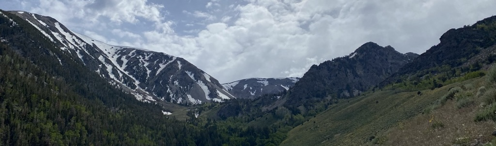
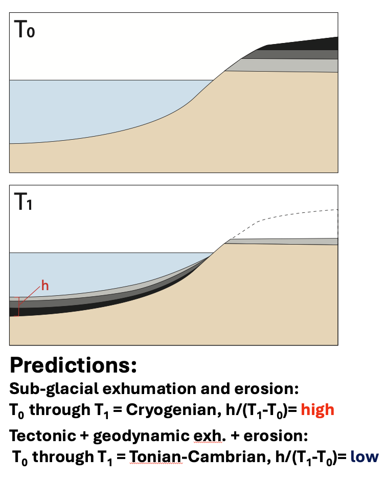
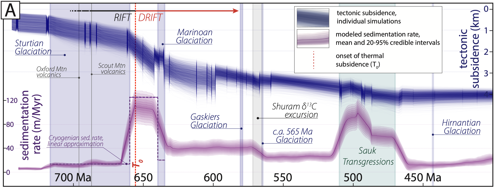

 
Hypotheses for the formation of the Great Unconformity, a lacuna of time and rock observed across cratonic North America, provide predictions that can be tested within a source-to-sink depositional framework. That is, hypotheses that invoke a given mechanism and timing for the exhumation and erosion of material from atop the craton provide testable predictions for when, and for how long, the exhumed/eroded material should be deposited into circum-cratonic accomodation space. Great Unconformity formation hypotheses that invoke sub-glacial exhumation and erosion during the Cryogenian snowball Earth glaciations predict rapid sedimentation in marginal basins throughout the Cryogenian, while those hypotheses that invoke diachronous exhumation and erosional events, amalgamated into the Great Unconformity surface over tens to hundreds of millions of years, predict lower sedimentation rates distributed over a much wider temporal range (see schematic figure at left). Testing this hypothesis requires a distal marginal sedimentary sequence that a) can produce an age model capable of resolving sedimentation rates across the Cryogenian, and b) exists within a well constrained tectonic context.
The Trout Creek Sequence and McCoy Creek Group
-
The Tonian-Marinoan Trout Creek Sequence and Ediacaran McCoy Creek Group comprise some of the most distal sedimentary sequences of the western Laurentian margin. We integrated new mapping, U-Pb geochronology, and carbonate chemostratigraphy into a new age model (at left) and stratigraphic framework for the Trout Creek Sequence and McCoy Creek Group. The majority of the McCoy Creek Group and Trout Creek Sequence were deposited in a distal, shelf-to-slope transitional settin below storm wave base, with coarse sandstone deposition into lobate fans at depth occurring through the delivery of coarse clastic material downslope within submarine channel networks. Rapid facies change, from coarse arenites to finer, more quiescent siliciclastic sequences, is most parsimoniously explained through lateral facies migration (e.g. upslope migration of a distributary channel network), rather than baselevel changes. Paleoflow indicators indicate a nearly uniformly-westward flow direction in coarse quartzites, further bolserting interpretations of deposition along a west-facing slope, rather than in a fluvial-deltaic environment(as has been previously ascribed to these strata), where more variable paleoflow directions would be predicted.
-
Stratigraphic thicknesses, depositional constraints (e.g. inferred paleodepth of deposition), and lithological parameters for the McCoy Creek Group and Trout Creek Sequence were input into a backstripping model, and combined with age controls to generate a tectonic subsidence curve for the NV-UT portion of the Laurentian margin. This curve, in blue, is plotted alongside a modeled sedimentation rate curve for the same stratigraphy, in purple, in the figure below. The new tectonic subsidence model reflects the development of a rifted passive margin, with a rift-drift transition occurring in the Cryogenian. Critically, high sedimentation rates occur during the middle Cryogenian, during the inferred peak in tectonic subsidence (e.g. preceding and during the rift-drift transition), but these rates are bounded by anemic sedimentation rates during both Cryogenian glacial intervals. Furthermore, the McCoy Creek Group records moderate rates of sedimentation along a prograding passive margin across the entirety of the Ediacaran, supporting hypotheses for the long-lived exhumation and erosion of supra-cratonic material and the diachronous, long-lived formation of a composite Great Unconformity.

-
The sediments that make up the McCoy Creek Group and Trout Creek sequence are dominated by arenitic quartzites and fine siliciclastics that may indicate the reworking/redeposition of material that has experienced one, or many, prior instances of chemical weathering. This notion is further supported by the detrital zircon spectra of these strata, which are largely stable and are comprised of material sourced from crystalline basement formed during either the Grenvillian Orogeny or earlier Laurentian orogenies (e.g. the Picuris, Yavapai-Mazatzal, or Big Sky; see panel A, below, for inferred extents of Grenvillian and pre-Grenvillian sedimentary cover). Critically, zircons of Grenvillian age disappear from the uppermost McCoy Creek Group, prior to the influx of the first evidence for primary chemical weathering products (e.g. detrital micas, clays, and non-allodapic carbonates) in the Osceola Formation. We interpret this pattern to reflect the inversion of the supracratonic sedimentary cover (older Trout Creek and McCoy Creek Group rocks contain Grenvillian grains, while younger strata lose this Grenvillian source as it is eroded and removed), while the influx of primary weathering products in the Osceola formation reflects the exposure of basement (likely along a preexisting paleotopography beneath the now-removed sedimentary cover) along the newly formed Transcontinental Arch (panel B, below). A syn-Shuram Carbon Isotope Excursion age for the Osceola Formation constrains the exhumation of the Transcontinental Arch providing sediment to this portion of the margin to have occured ca. 570 Ma.
A new tectonic subsidence and sedimentation rate model
Stratigraphic inversion of the sedimentary cover of North America
Recent Publications
- Anttila, E.S.C., Macdonald, F.A., Zinto, J., and Britt, M.D., 2024. The Real McCoy: Great Unconformity source-to-sink on the rifted passive margin of Laurentia. Earth and Planetary Science Letters, v.642, 118852. DOI:10.1016/j.epsl.2024.118852.